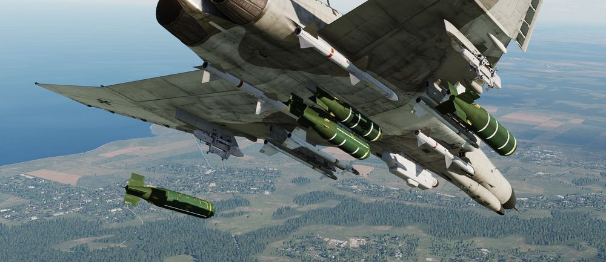

Cluster Bombs
Available cluster bombs are:
| Variant | Sub-Munition | Amount | Description |
|---|---|---|---|
| Mk-20 | Mk 118 | 247 | HEAT |
| CBU-52B | BLU-61A/B | 220 | HE |
| CBU-87 | BLU-97/B | 202 | Combined Effects |
| CBU-1A/A | BLU-4B | 513 | HE |
| CBU-2/A | BLU-3 | 361 | HE |
| CBU-2B/A | BLU-3B | 418 | HE |
| BL-755 | Mk 1 | 147 | HEAT, used by german F-4F |
Mk 20 Rockeye

Carrying 247 Mk 118 anti-tank bomblets, the Mk 20 Rockeye is used to deliver said potency across a wide dispersal area. The Mk 20 has a base schedule dispersal time depending on variant (4 seconds in the Mod 2 variant, and 1.2 seconds in the Mod 3), along with a ground crew selectable option time that is programmed prior to takeoff. In concert, once over the target area the pilot can select the necessary option through the Nose/Tail Arming switch, and deliver the weapon with the profile most suited to the target.
CBU-52B
Cluster bomb using a SUU-30 submunitions dispenser loaded with 220 BLU-61A/B anti-personnel and anti-material incendiary high explosive fragmentation bombs.
CBU-87

Free falling bomb consisting of a SUU-65B canister with a timed fuze. Carries 202 BLU-97/B submunitions.
Each bomblet is attached to a a small ballute that slows them down and increases their spread while falling. Upon impact, they have a combined shaped charge, fragmentation and incendiary effect, which makes them suitable for anti-personnel, anti-material and also anti-armor.
CBU-1, CBU-2
Dispensers with 19 tubes each loaded with either 27 BLU-4B, 19 BLU-3 or 22 BLU-3B HE bomblets. Upon impact with the ground, each bomblet discharges high velocity fragments in a radial pattern.
In the case of the CBU-2/A and CBU-2B/A, the carried BLU-3 bomblets are loaded with steel balls suitable even for unarmored vehicles. The CBU-1A/A, carrying BLU-4B bomblets, is loaded with anti-personnel shrapnel material.
BL-755

Cluster bomb divided into 7 bays, each containing 21 submunitions equipped with a shaped charge HEAT warhead for armor penetration.
After release, submunitions are dispensed and scattered using an inflatable bag.
The weapon was used extensively during the Falklands War by the Royal Air Force. It was also used by the German Air Force, including the F-4F.
Employment
With the exception of the CBU-1 and CBU-2, cluster bombs are deployed using the BOMBS setting on the Weapon Selector Knob.
The CBU-1/-2 however, are dispensers that technically have more similarities with a rocket launcher than they have with a conventional bomb. The setting RKTS & DISP has to be used to employ them properly.
The A setting can also be used as a backup mode which will send a single pulse signal to all selected pylons on each press of the Bomb Button.
Technically, all bombing modes on the Delivery Mode Knob are supported, see the 4.3.3.6. Employment section for details.
However, since bomblets are often deployed by a timed fuze, best results are achieved if they are dropped directly above the target area with laydown modes DL or L. Modes DT and TGT FIND, as well as Direct, TL or OFFSET can also be used effectively.